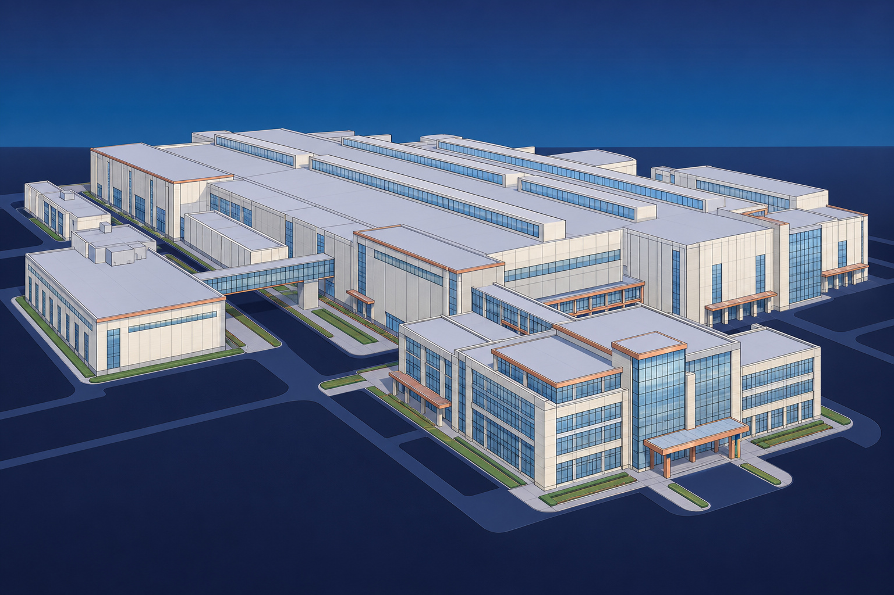

NorthStarWe Bring Answers.
NorthStarWe Bring Answers.ManufacturingIndustry briefing / 01
Manufacturing / The recovery priorities
Facility recovery, planned around production.
Connect emergency response, remediation and reconstruction with the spaces, access needs and recovery priorities that matter to your plant.

The next production milestone starts here.
A damaged production area can affect packaging, storage and shipping beyond the immediate loss. Build the physical recovery plan around those connections, with plant leadership, engineering and quality involved in the decisions that shape the next stage.
01
Know the facility
02
Set production priorities
03
Coordinate the handover
40+ years of experience
Emergency response · Environmental services · Reconstruction